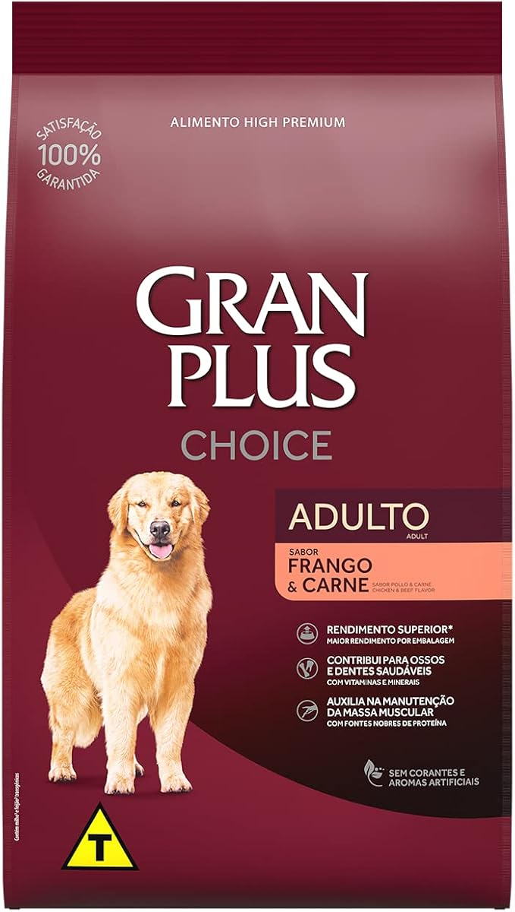
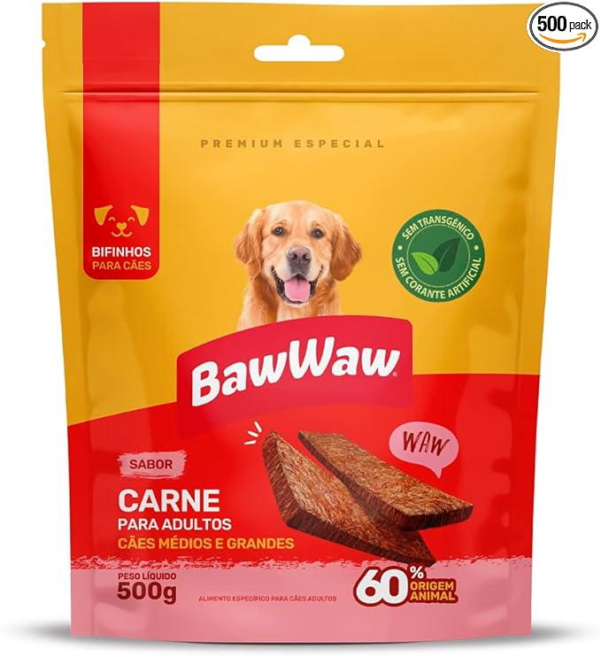
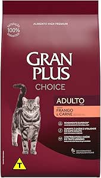
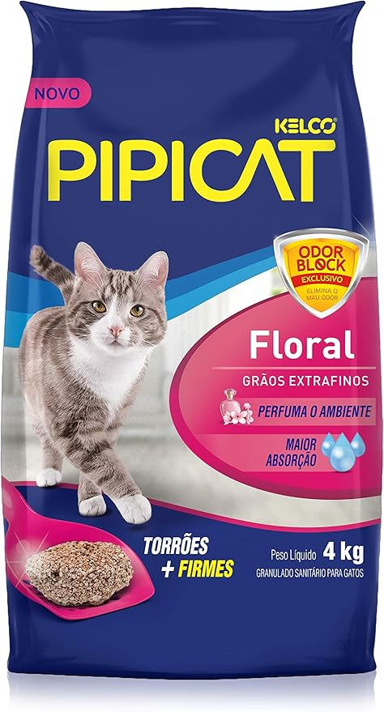
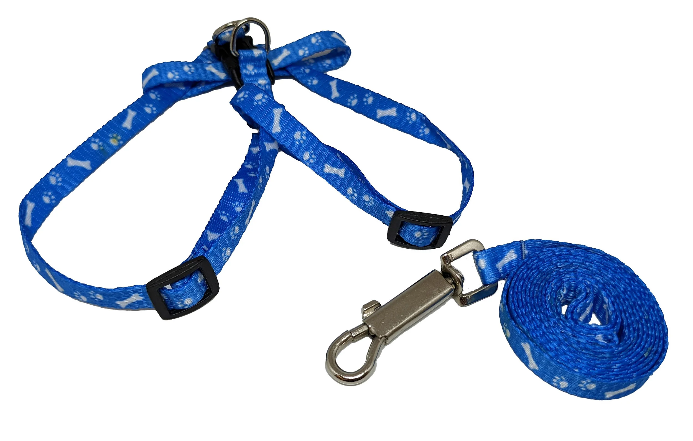
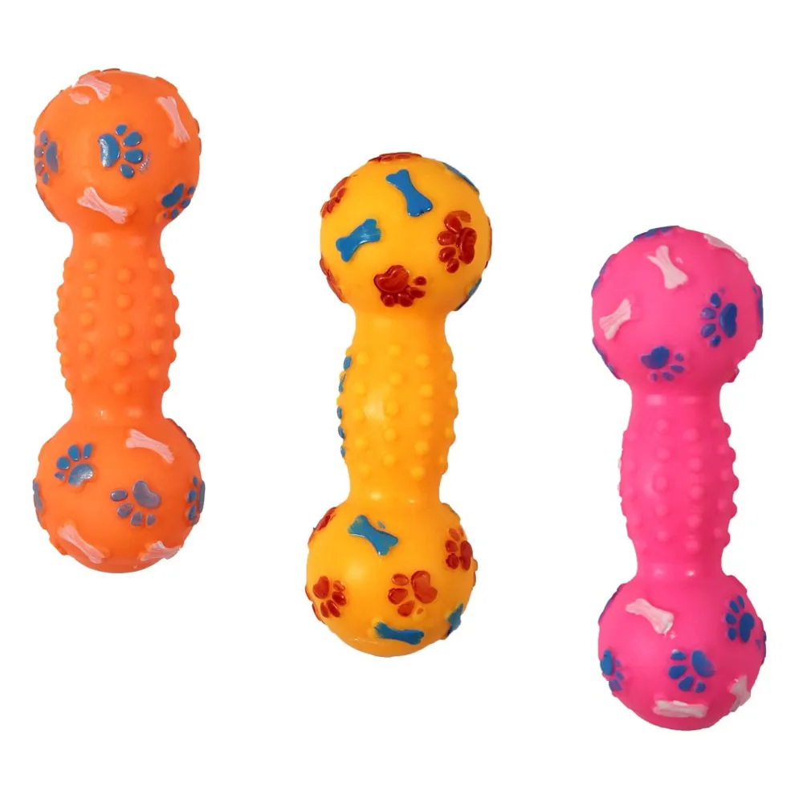

Ração Premium para Cães Adultos - 10kg

Ração completa e balanceada, indicada para cães adultos de pequeno e médio porte. Possui vitaminas, minerais e proteínas essenciais.
Valor: R$ 129,90
Cuidando do seu melhor amigo com carinho, atenção e qualidade.
O PetShop Gabriel Souza oferece produtos e serviços voltados ao bem-estar, à saúde e ao conforto dos animais de estimação.

Ração completa e balanceada, indicada para cães adultos de pequeno e médio porte. Possui vitaminas, minerais e proteínas essenciais.
Valor: R$ 129,90

Petisco macio e saboroso, ideal para recompensas durante o treino ou para agradar o animal no dia a dia.
Valor: R$ 18,50

Alimento balanceado para gatos adultos, formulado com nutrientes que contribuem para a saúde, energia e qualidade de vida do pet.
Valor: R$ 139,90

Areia higiênica com alto poder de absorção, ajudando no controle de odores e facilitando a limpeza diária da caixa de areia.
Valor: R$ 24,90

Coleira resistente e confortável, acompanhada de guia para passeios mais seguros e tranquilos com o animal.
Valor: R$ 39,90

Brinquedo desenvolvido para estimular a diversão do pet e auxiliar no entretenimento e na mastigação.
Valor: R$ 22,00
O petshop também oferece serviços especializados para atender às necessidades de higiene, estética e saúde dos animais.
Serviço de banho com produtos apropriados para cada tipo de pelagem, proporcionando higiene, conforto e bem-estar ao pet.
Valor sem tele-busca: R$ 45,00
Valor com tele-busca: R$ 60,00
Tosa higiênica e estética realizada por profissionais qualificados, contribuindo para a saúde e a aparência do animal.
Valor sem tele-busca: R$ 60,00
Valor com tele-busca: R$ 75,00
Atendimento veterinário para avaliação clínica, acompanhamento da saúde e orientações de cuidados para o pet.
Valor sem tele-busca: R$ 90,00
Valor com tele-busca: R$ 105,00